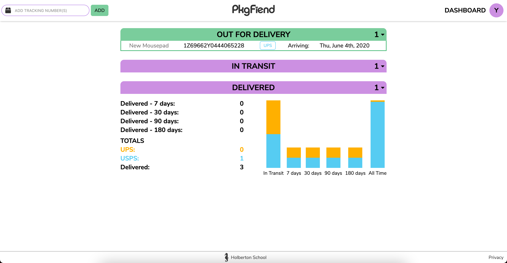
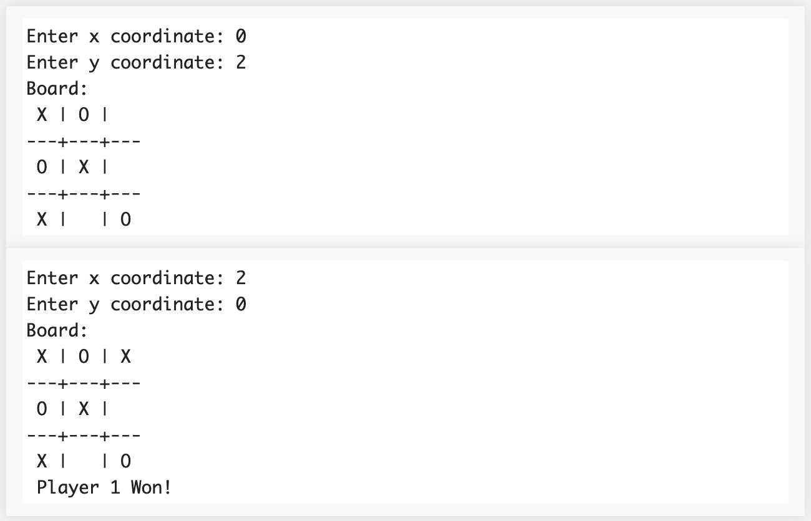
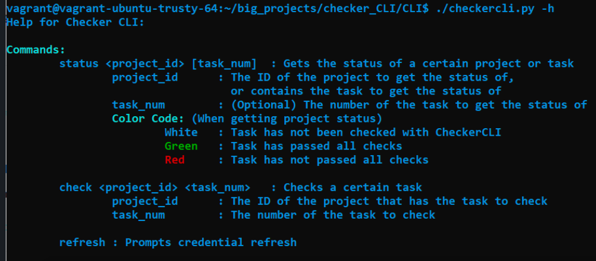
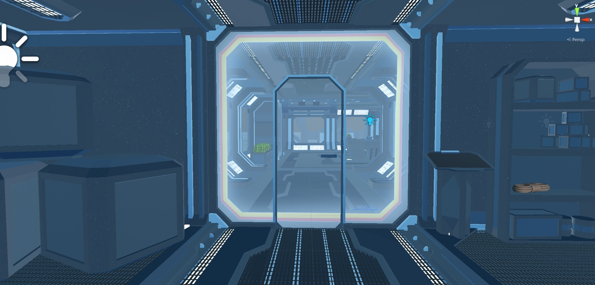

Package Fiend

Keep track of your packages in one place with a simple interface.
Save your tracking numbers, and give them a name. Discover your preferred carriers over time.
Use your dashboard to stay organized. See all your packages and their relevant data.
Perl Tic-Tac-Toe

A fully-featured tic-tac-toe game made in Perl.
This was made as part of a hack day where we had to use a language none of the members of our group had used before, we chose Perl.
There's even a pretty smart computer you can play against.
Checker CLI

The Checker CLI was made for Holberton students to be able to check their work without leaving the command line.
CCLI gives the user several useful commands to save them time while also optimizig use of the API via a simple cache.
VR Escape Room

An escape room experience made in Unity to be played on the Oculus Quest 2.
Explore your environment to solve the puzzles to turn on the projector and open the door to escape.